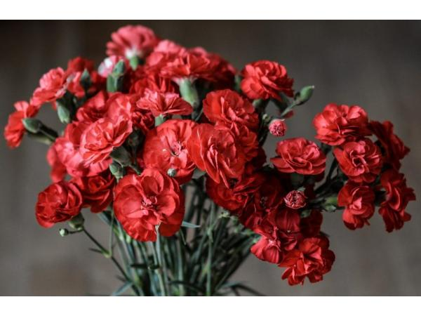
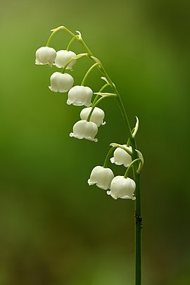

 Гвоздика багаторічна є теплолюбною рослиною, якому, незалежно від виду, потрібно багато сонця. В іншому випадку рясного цвітіння добитися не вдасться. Найкраще культура розвивається на легких, не кислих і влагопроницаемих типах грунтів. Особливу укриття на зимовий час, як правило, їй не потрібно. Єдине, до чого чутливо рослина, - це перепади температур, які трапляються взимку і навесні. У природі налічується більше трьохсот видів і сортів цієї рослини. Воно зустрічається на території Європи, Азії, Північної Америки та Північної Африки. Саме широке поширення характерно для Середземноморського регіону.
 Конвалія звичайна — багаторічна рослина родини холодкових. Рослина отруйна, використовується як декоративна, ефіроолійна та лікарська. Трав'яниста багаторічна рослина. Квітконосне стебло голе, прямостояче, безлисте, оточене при основі трьома-шістьма бурими піхвами. Листки прикореневі, звичайно їх два, зрідка один або три, довгасто-овальні або еліптичні, великі. Основа листка клиноподібна, у зовнішнього листка вона переходить у довгу піхву, що обволікає стебло і черешок внутрішнього листка. Квітки зібрані на верхівці стебла в однобічну 6-10-квіткову китицю. Квітконіжки при основі з коротким плівчастим приквітком. Квітки правильні, з простою округло-дзвоникоподібною, білою, шестизубчастою оцвітиною. Тичинок шість, маточка одна, стовпчик один, зав'язь верхня. Плід — малонасінна червона ягода.
У більшості рослин частини квітки утворюють добре помітні мутовки або кола (цикли). Найпоширеніші пента- і тетрациклічні, тобто п'яти- і чотирикругові квітки. Число частин квітки на кожному колі може бути різним. Найчастіше квіти бувають пентациклічні: два кола оцвітини (чашечка і віночок), два кола тичинок (андроцей) і одне коло з плодолистків (гінецей). Таке розташування квіток характерне для Лілійних, Амарилісових, Гвоздичних, Геранієвих. У тетрациклічних квіток зазвичай розвивається два кола оцвітини: одне коло андроцея і одне коло гінецея (Півникові, Зозулинцеві, Бруслинові, Ранникові, Губоцвіті тощо) Іноді спостерігається зменшення числа кіл та членів в них (безпокровні одностатеві квітки) або збільшення (особливо у садових форм). Квітку зі збільшеним числом кіл називають махровою. Махровість зазвичай пов'язана або з розщепленням пелюсток в процесі онтогенезу квітки, або із перетворенням в пелюстки частини тичинок. У будові квіток проявляються певні закономірності, зокрема правило кратних відносин. Його суть полягає в тому, що в різних колах квітки є однакова або кратна кількість членів. У більшості однодольних рослин найчастіше зустрічаються тричленні, у дводольних — п'ятичленні, рідше дво- або чотиричленні (Капустяні, Макові) квітки. Відступ від цього правила часто спостерігається в колі гінецея, число його членів буває менше, ніж в інших колах. У більшості покритонасінних всі частини квітки розташовані на квітколожі у вигляді концентричних кіл (квітка кругова, циклічна). В інших випадках (магнолія, купальниця) вони розташовані по спіралі (квітка спіральна, ациклічна). Іноді одні частини квітки розташовані в колах, інші по спіралі (квітка напівколова, геміциклічна або спіроциклічна). В останніх оцвітина має циклічне, а тичинки і маточка — спіральне розташування (жовтець), або чашечка — спіральне, а інші частини квітки — циклічне (шипшина). Зазвичай вважають, що еволюційно ациклічні квітки архаїчніші ніж циклічні, тобто вони утворилися в процесі еволюції раніше. У квітці спіралі виражаються тими ж формулами, що і листорозміщення. Іноді вони дуже складні, особливо серед тичинок. У циклічних квітках здебільшого чітко видно, що члени будь-якого кола чергуються з членами сусідніх кіл, а не протистоять їм. Звідси виводять правило чергування кіл. Якщо тичинки розташовані у два кола, то зовнішнє коло буває зазвичай протичашечним, а члени внутрішнього кола протистоять пелюсткам. Відступ від цього правила іноді виникає в результаті редукції одного з кіл, тобто при переході від пентациклічної до тетрациклічної квітки, зберігається або зовнішній (крушини), або внутрішнє коло (Бруслинові).
На початок сторінки